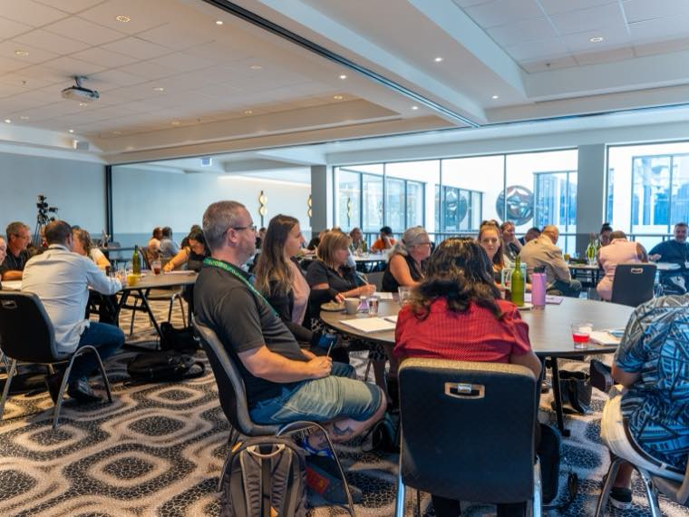
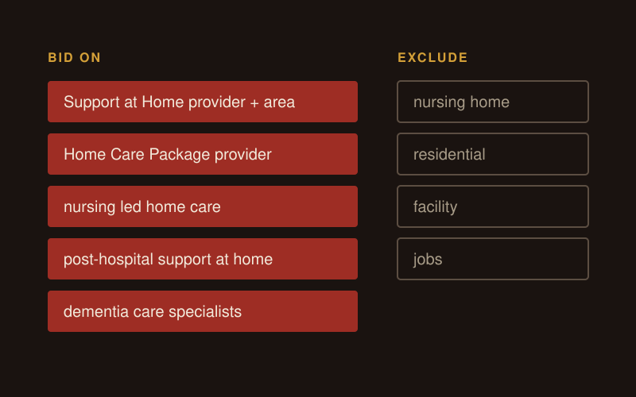

Aged care marketing
Aged care marketing is the work of getting older people, and the families helping them, to find your service and pick up the phone. For a Support at Home or residential provider, that means search, ads, referrals and a fast enquiry process, run inside the rules of the new Aged Care Act. I run that work for providers.
What does aged care marketing involve under Support at Home?
It means running search, ads and referrals under new rules. Support at Home started on 1 November 2025 (opens in a new tab) and replaced Home Care Packages and Short-Term Restorative Care. The new Aged Care Act (opens in a new tab) started the same day.
Under the Act, registered providers have to act consistently with the Statement of Rights and comply with the strengthened Aged Care Quality Standards and the Code of Conduct for aged care. I treat those as part of the brief from day one, alongside the ad copy and the website.

How do older people and families choose a provider?
Two people usually have a say: the older person receiving care, and the family member doing the research. Before any campaign I ask: "Am I going to market today to a chooser or a user?"
In aged care the chooser is usually an adult child. Copy for them talks about "your mum" or "your dad". Copy for the older person talks about "you" and their own life at home.
My mum once had to find a new home for a family member at the 11th hour on a Sunday. She searched on her phone and went with a provider she found on Google. One sample size of one, but that's the person your website has to work for.
The other way in is a referral. When a GP recommends a surgeon, you rarely shop around. Referrals from GPs, hospital discharge teams and aged care assessors arrive with that same trust attached, so I build referrals as a channel of their own. For hospital teams I build a pitch per condition, and dementia is the obvious first one for a provider with years in aged care.
The ACCC says people can change their home care provider at any time (opens in a new tab), for any reason, so the follow-up after sign-up counts as much as the first enquiry.
Why doesn't "aged care" work as a home care keyword?
In February 2026 I told the Google Ads specialist on a home care launch that "aged care" was too broad. In Australia the term still reads as nursing homes, so many of the people clicking wanted a room for a parent, which that provider didn't offer.
I asked for the budget to go on the searches people make when they shop for a provider:
- "Support at Home provider" plus the area, the name families now see in their approval letters.
- "Home Care Package provider", still a high-volume term with families who know the old system.
- Clinical terms such as "nursing led home care", "post-hospital support at home" and "dementia care specialists".
- Negative keywords such as "nursing home", "residential", "facility" and "jobs".
If you run disability and aged care services side by side, I build separate campaigns, because people in both sectors search "home care" and "respite". More on the Google Ads page.

What must a Support at Home provider publish on its website?
Your own website has to show the most frequently charged price for each service. The Department of Health, Disability and Ageing says Support at Home providers must publish that price on My Aged Care and on their website (opens in a new tab). The rules are specific:
- Cover every service you deliver or have delivered in the last 12 months.
- Cover all service delivery hours, including non-standard hours, weekends and public holidays.
- Review the published prices at least every 2 months.
- Keep prices reasonable. The department and the Aged Care Quality and Safety Commission monitor billing data and can refer providers for enforcement.
I build the price page to read well on a phone, with each price next to a plain description of the service. Families comparing providers land on it, so it belongs in the SEO plan from the start.
What can aged care providers claim in advertising?
Only what you deliver. Australian Consumer Law applies to home care whether the person pays privately or with government funding. The ACCC says home care providers should (opens in a new tab):
- give clear, honest and complete information about their products and services
- give people time to seek advice and make decisions
- make sure agreements are easy to understand and free of unfair terms
- avoid commission-based models that lead to pressure selling.
The ACCC enforces this in aged care. In 2019 it took Bupa Aged Care to the Federal Court (opens in a new tab) over alleged false or misleading representations to residents in 21 homes about extra services.
In ad copy that rules out "best care in [suburb]" claims you can't prove, and urgency tactics that rush a family into signing.
Do photos and stories need consent?
Yes, in practice. The OAIC treats images of identifiable people as personal information. Its guidance says you need consent when an image records sensitive information (opens in a new tab) about the person, and a photo that shows someone's health or care needs can do that. Get written consent from the person, or their authorised representative, for each use before anything goes online. The same goes for client stories.
How do you lift residential aged care occupancy?
For a residential home, the "aged care" and "nursing home" searches that waste a home care budget are the right searches. I run occupancy work in this order:
- Search ads and a Google Business Profile for each home, by suburb.
- Real photos of each home and its staff, taken with consent.
- A same-day call back to every enquiry, with a tour time offered on that call.
- A written follow-up after the tour.
- A monthly count of enquiries, tours and admissions by channel.
What does the aged care marketing service include?
| Service | What it covers for aged care |
|---|---|
| SEO | Service and suburb pages, the price page, a Google Business Profile per location |
| Google Ads | Provider-shopping search terms, with negative keywords |
| Social media ads | Meta campaigns aimed at adult children |
| Enquiry follow-up and referrer updates | |
| Referrals | GP, hospital and assessor relationships, tracked |
| Enquiry process | Call handling, intake and tour booking |
| Managed Growth | All of the above, run as one plan by me |
You can start with one channel or hand me the whole lot through Managed Growth.
FAQ
Do you work with home care, residential aged care, or both?
Both, with the same channels and different targeting. Home care campaigns use Support at Home and clinical search terms and keep "nursing home" searches out. Residential campaigns go after those exact searches by suburb and put the effort into tours and admissions. Providers running both get separate campaigns for each.
Do Support at Home providers have to show prices on their website?
Yes. The Department of Health, Disability and Ageing requires Support at Home providers to publish the most frequently charged price for each service on My Aged Care and on their own website. The prices have to cover all services delivered in the last 12 months, across all service hours, and providers must review them at least every 2 months.
How do you measure aged care marketing results?
I report every month on enquiries by channel, cost per enquiry, how many enquiries became new clients or admissions, and referral activity from GPs, hospitals and assessors. I write the report in plain language and finish it with what I recommend changing. If a channel isn't producing enquiries, I say so and name the fix.
Can you run Google Ads for aged care?
Yes. For home care I target provider-shopping terms such as "Support at Home provider" plus the area, and "Home Care Package provider", which families who know the old system still search. I add negative keywords such as "nursing home", "residential" and "jobs" so the budget stays on the right searches.
Do you also work with NDIS providers?
Yes. NDIS marketing is the larger part of my work, and several providers I work with run disability and aged care services side by side. I keep the two apart in campaigns and in copy, because people in each sector search different terms and need a different message.
How long until marketing lifts enquiries?
Google Ads can bring enquiries in the first weeks after launch. SEO is slower: the first organic enquiries arrive between month 4 and month 6. Referral relationships with GPs and hospital teams take months of regular contact to build, then keep producing enquiries.
Get a free growth audit
I'll look at your website, your search terms and how your team handles enquiries, then tell you what I'd fix first.